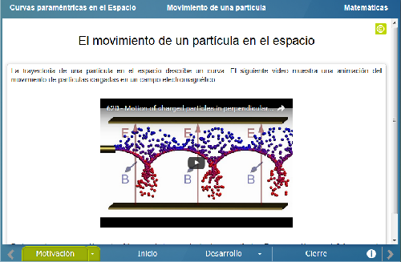
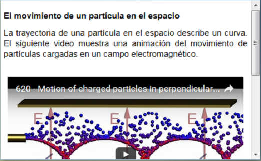
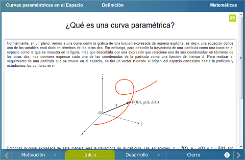
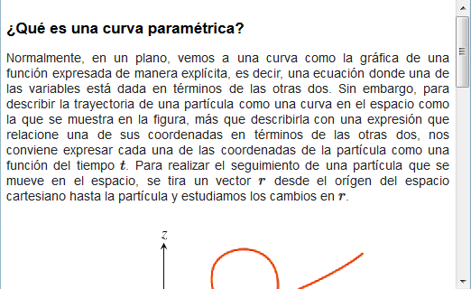
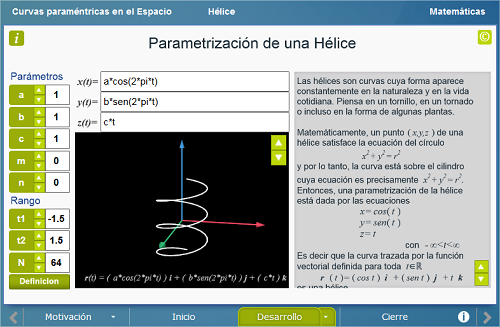
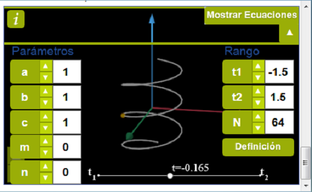
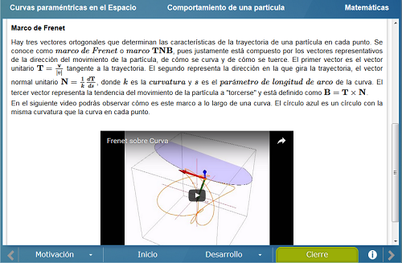
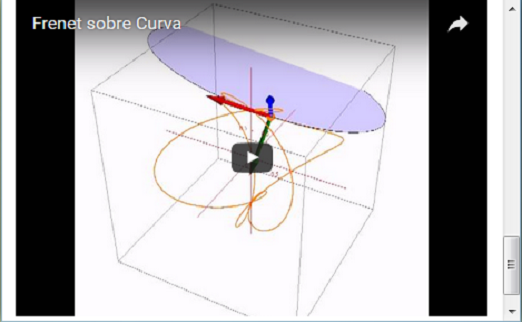

Curvas paramétricas en el espacio
Curvas paramétricas en el espacio
 Curvas paramétricas en el espacio
Curvas paramétricas en el espacio
Esta unidad didáctica tiene como objetivo explorar la gráfica de una curva expresada paramétricamente en un espacio de tres dimensiones.
Se muestran dos videos, el primero es una animación del movimiento de partículas cargadas en un campo electromagnético. El segundo muestra el uso de un tipo particular de curvas paramétricas, las Curvas de Bézier, en el diseño.


Se definie la parametrización de una curva y se menciona lo que caracteriza al movimiento de una partícula cuando se considera a su trayectoria como una curva.


Consta de tres escenas. En la primera escena se muestra la parametrización de una Hélice. En la segunda escena se introduce otra forma de parametrizar una curva por medio del producto de una función del tiempo t y de funciones trigonométricas. Finalmente, la tercera escena se introduce el concepto de dirección y velocidad del movimiento de la partícula a lo largo de la curva y se muestra el vector tangente a la curva en cada punto. En las tres escenas el usuario puede explorar la curva modificando o agregando parámetros.


Se mencionan de manera más formal los conceptos de velocidad y aceleración, así como el marco de Frenet, que se ilustra a través de un video.


| Diseño del contenido | Brenda Casandra Vargas Rocha (Instituto de Ciencia e Ingeniería de Materiales, UNAM) |
| Diseño funcional | Brenda Casandra Vargas Rocha (Instituto de Ciencia e Ingeniería de Materiales, UNAM) |
| Programación | Brenda Casandra Vargas Rocha (Instituto de Ciencia e Ingeniería de Materiales, UNAM) |
| Asesoría de programación |
José Luis Abreu León (Instituto de Matemáticas, UNAM) Leticia Montserrat Vargas Rocha |
| Diseño gráfico | Ricardo López Gómez |
| Coordinación | Leticia Montserrat Vargas Rocha |
| Diseño funcional | Elsa Sirenia Vega Camacho |
| Programación | Elsa Sirenia Vega Camacho |
| Asesoría de programación | Leticia Montserrat Vargas Rocha |
| Diseño gráfico | Francisco Varela Fuentes |
| Ilustración | Francisco Varela Fuentes |
| Coordinación | Leticia Montserrat Vargas Rocha |
| Desarrollo del contenedor | Oscar Escamilla González |
Los contenidos de esta unidad didáctica interactiva están bajo una licencia Creative Commons Reconocimiento-NoComercial-CompartirIgual.
La unidad didáctica fue creada con Arquímedes, una herramienta de código abierto.
La unidad didáctica contiene escenas elaboradas con Descartes, una herramienta de código abierto.
LITE - UnADM 2014